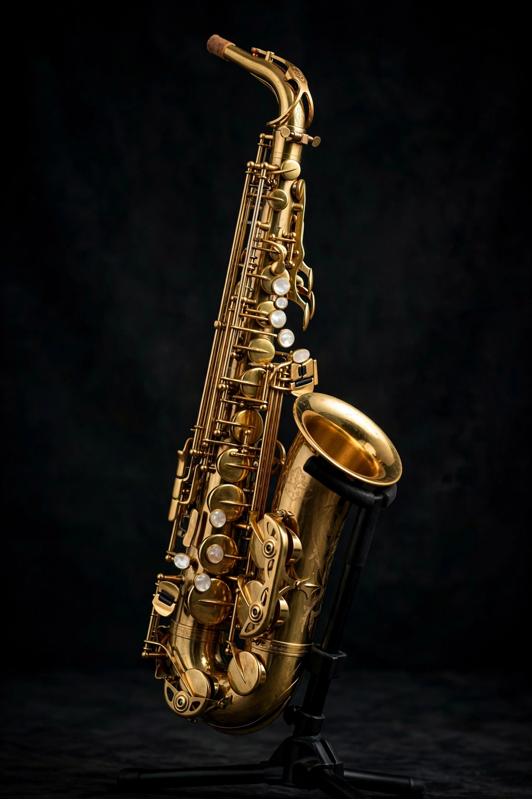

Wikipedia — The Free Encyclopedia

The saxophone (often referred to as the sax) is a family of single-reed woodwind instruments, usually made of brass, with a conical bore and a flared bell. It was invented by the Belgian instrument maker Adolphe Sax in the 1840s and patented in 1846. Although devised for military bands and orchestral use, the saxophone became most closely associated with popular music and jazz in the twentieth century.
Sound is produced by a single cane (or synthetic) reed fixed to a mouthpiece, as on a clarinet, but the conical tube makes the saxophone overblow at the octave, simplifying its fingering. Sax patented two groups of seven instruments; those in B♭ and E♭ — soprano, alto, tenor and baritone above all — dominate today. The alto and tenor are the most common sizes; the tenor's voice, from Coleman Hawkins and Lester Young to John Coltrane and Sonny Rollins, is central to the sound of jazz.
Berlioz championed the new instrument, and French military bands adopted it, but orchestral composers used it sparingly — in works by Bizet, Ravel (the Boléro solos) and Rachmaninoff. The saxophone's great career began in American dance bands and jazz of the 1920s, continued through swing, bebop and rhythm and blues, and into rock, soul and pop, where its vocal, flexible tone made it a favourite solo voice. A substantial classical repertoire also exists, with solo works and saxophone quartets.